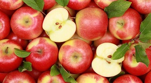

Здоровое питание
Польза здорового питания не может быть переоценена. Существует большое количество полезных продуктов, употребление которых поддерживает наше самочувствие: фрукты, овощи,
молочные продукты и т.д. Они содержат необходимые нашему телу витамины и минералы. Именно поэтому их очень важно употреблять.
Спорт
Спорт помогает поддерживать наш организм в необходимой форме. Он делает наше тело крепче и помогает продлить нашу жизнь. Существует большое количество дисциплин,
среди которых каждый может найти что-то, что ему понравится.

©Ковалёв Александр Александрович